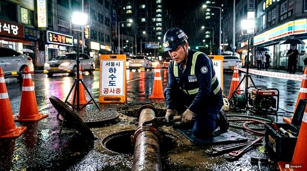
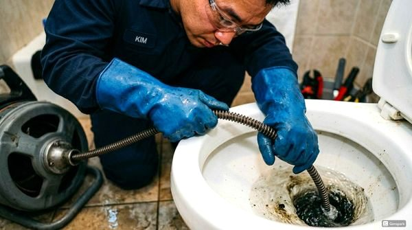
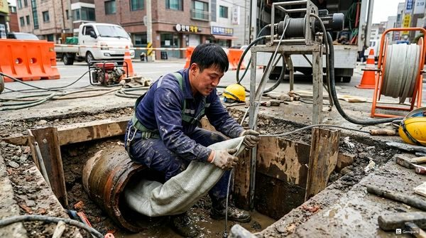

하수구 막힘 DIY vs 전문가 - 언제 전문가를 불러야 할까
2026년 4월 12일 | 제우스시설관리
하수구가 막히면 먼저 직접 해결을 시도하는 분들이 많습니다. 간단한 막힘은 가정에서 충분히 해결 가능하지만, 잘못된 DIY는 오히려 상황을 악화시킬 수 있습니다. DIY 가능한 경우와 전문가가 필요한 경우를 명확히 구분해야 합니다.

DIY로 해결 가능한 경우: 배수구 위에 보이는 이물질 제거, 끓는 물 부어 기름때 녹이기, 베이킹소다+식초로 경미한 막힘 해소, 배수구 거름망의 머리카락 제거. 이런 간단한 작업은 도구 없이도 가능하며, 대부분 10분 이내에 해결됩니다.
전문가를 불러야 하는 경우: ① 끓는 물/베이킹소다로 해결 안 될 때, ② 여러 배수구가 동시에 느려질 때(공용 배관 문제), ③ 하수 냄새가 지속될 때, ④ 역류가 발생할 때, ⑤ 꾸르릉 소리가 날 때. 이런 증상은 배관 깊은 곳에 원인이 있어 드레인 기계나 고압세척기가 필요합니다.

절대 하지 말아야 할 DIY: 강산성/강알칼리성 세정제 과다 사용(배관 부식), 철사나 옷걸이로 배관 찌르기(배관 손상), 고무컵(뚫어뻥)의 과도한 사용(배관 연결부 느슨해짐). 잘못된 DIY로 배관이 손상되면 수리비가 몇 배로 늘어납니다.

판단이 어려우시면 전화 상담만으로도 도움을 받을 수 있습니다. 제우스시설관리는 증상을 듣고 DIY로 해결 가능한 경우 방법을 안내해드립니다. 전문 작업이 필요한 경우 28분 내 출동합니다. 010-4406-1788